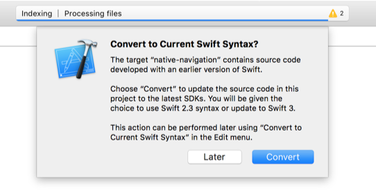
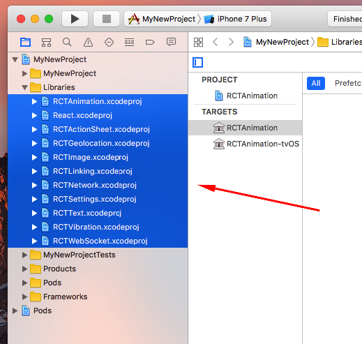
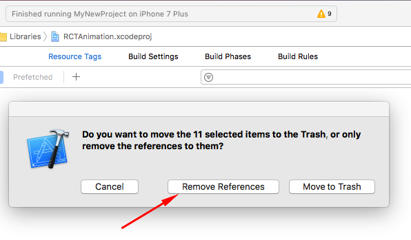

Installation
If you get a chance to scroll down this page, you might be thinking to yourself:
Why is installing Native Navigation so complicated?
Good question. There are a couple of factors...
- Native Navigation changes the way you structure your React Native app by encouraging multiple React "Root Views" rather than one. This means if you're using the standard boilerplate that came with the React Native CLI starter template, we have to change some of the code to make it work.
- The iOS implementation of Native Navigation is written in Swift, and using Swift in React Native
apps has some challenges due to Swift code needing to be dynamically linked. React Native projects
are typically all done with static linking. We are working on making this aspect of the setup less
complicated, but it might take some time. The easiest way to skirt around these issues is to use
CocoaPods to manage your dependencies. It's worth pointing out that this will mean you can't use
react-native linkfor other dependencies you install.
If you are starting a new project from scratch, we recommend downloading or cloning our boilerplate starter project.
Creating a new project with Native Navigation
You can start your project using React Native's CLI. If you do not have the CLI installed yet, run the following command:
npm i -g react-native-cli
With the CLI installed, you can create a new project. In this example we will call it MyNewProject:
react-native init MyNewProject
cd MyNewProject
Install the latest version of native-navigation:
npm i --save native-navigation
IMPORTANT: Do NOT use react-native link to link native navigation. It is currently not supported.
JavaScript Project Setup
We recommend structuring your project in a slightly different way than the React Native template starts you off with. For a more detailed guide, please check out our Project Structure Guide.
For a quicker setup, we are going to just change the minimal amount in this guide.
You should start with two entry files, index.ios.js and index.android.js.
In both files, you should have a demo app component set up, with a call to AppRegistry.registerComponent
that looks something like this:
AppRegistry.registerComponent('MyNewProject', () => MyNewProject);
We want to change this to import Native Navigation and use NativeNavigator.registerScreen instead in both files:
// top of the file
import Navigator from 'native-navigation';
// bottom of the file
Navigator.registerScreen('Home', () => MyNewProject);
And you're done! We have now made this component a "Screen", and we have called it "Home".
Note: It is also completely fine to just delete one of these files, and rename it to be index.js, and
have the entry point of your application be cross-platform. This is entirely up to you, though.
iOS Project Setup
Native Navigation is written in Swift, and thus it is currently required to be imported into your iOS App as a dynamic framework. We are actively working on an approach to importing this project such that it can be statically linked, but for now the easiest way to use Native Navigation is with CocoaPods.
It is important to understand that if you use CocoaPods for Native Navigation, all of the other native libraries that depend on React, as well as React itself, need to also be imported using CocoaPods.
To get started with CocoaPods, we first want to make sure we have it installed:
sudo gem install cocoapods
React Native requires CocoaPods version 1.2.0 or greater, so verify that you have at least that version:
pod --version
If you do, we now need to create a Podfile for your ios project.
cd ios
pod init
There should now be a Podfile in this directory. Open it. You should edit your Podfile to look like this:
target 'MyNewProject' do
# Native Navigation uses Swift, so this line is required!
use_frameworks!
# Native Navigation!
pod 'native-navigation', :path => '../node_modules/native-navigation'
# To use CocoaPods with React Native, you need to add this specific Yoga spec as well
pod 'Yoga', :path => '../node_modules/react-native/ReactCommon/yoga/Yoga.podspec'
# You don't necessarily need all of these subspecs, but this would be a typical setup.
pod 'React', :path => '../node_modules/react-native', :subspecs => [
'Core',
'RCTText',
'RCTNetwork',
'RCTWebSocket', # needed for debugging
'RCTAnimation',
'RCTImage',
'RCTNetwork'
# Add any other subspecs you want to use in your project
]
# Add any other dependencies here, including any 3rd party native libraries that you depend on for
# React Native.
end
Now that your Podfile is ready, you can run pod install:
pod install
There should now be an MyNewProject.xcworkspace available in your ios directory, which was created
by CocoaPods. You should use this file to open your app up in XCode, NOT the .xcodeproj file.
We now need to make some modifications to our project in Xcode. Open up the project:
open MyNewProject.xcworkspace

Xcode may presents a window asking if you want to update the project to the latest swift version, click "Convert". There aren't any actual changes that need to be made. React Native's template just has the project set to use Swift 2.3 instead of Swift 3.
React Native's starter template will have the React Project initially statically linked to your project, but now we are using CocoaPods, so we want to get rid of them.
In Xcode, go to the "Project navigator" in the left sidebar and find the Libraries folder. Select
every library in that folder, then right-click it and hit "Delete":

For the dialog that appears, click "Remove References":

Now we need to set up our navigation in our project's actual code. We are going to do most of the
work in the AppDelegate class that React Native's starter template provides you.
The starter template has a single RCTRootView being created with a bundle URL, which then internally creates
an RCTBridge instance. Native Navigation needs a single RCTBridge instance to handle the creation
of RCTRootViews itself. To do this, we recommend implementing a shared "singleton" object in your app
that implements both the RCTBridgeDelegate and ReactNavigationCoordinatorDelegate protocols. In the starter
template, the main AppDelegate object is a good candidate.
Start by modifying your AppDelegate.h header file to make your AppDelegate class implement the
RCTBridgeDelegate and ReactNavigationCoordinatorDelegate protocols:
@interface AppDelegate : UIResponder <UIApplicationDelegate, RCTBridgeDelegate, ReactNavigationCoordinatorDelegate>
You will also need to include the following headers:
#import <React/RCTBridge.h>
@import NativeNavigation;
In the AppDelegate.m implementation file, we need to implement those delegate methods and set up
Native Navigation's ReactNavigationCoordinator.
The RCTBridgeDelegate has a sourceURLForBridge: method, which is expected to return an NSURL for
the app's JavaScript entry point. For this, we recommend using the RCTBundleURLProvider, and you can
actually just copy the code that the starter template uses in application:didFinishLaunchingWithOptions:.
- (NSURL *)sourceURLForBridge:(RCTBridge *)bridge {
return [[RCTBundleURLProvider sharedSettings] jsBundleURLForBundleRoot:@"index.ios" fallbackResource:nil];
}
The ReactNavigationCoordinatorDelegate has a rootViewControllerForCoordinator: delegate method that
is meant to return the root view controller of the entire app that NativeNavigation will use to understand
the current navigation stack. Typically, this is just the rootViewController of the window:
- (UIViewController *)rootViewControllerForCoordinator: (ReactNavigationCoordinator *)coordinator {
return self.window.rootViewController;
}
Now we want to adjust the AppDelegate's application:didFinishLaunchingWithOptions: method.
The first thing we want to do is create an RCTBridge instance with the delegate:
RCTBridge *bridge = [[RCTBridge alloc] initWithDelegate:self
launchOptions:launchOptions];
Native Navigation has a shared ReactNavigationCoordinator instance that does a lot of the coordination
of the library. It needs an RCTBridge and an ReactNavigationCoordinatorDelegate:
ReactNavigationCoordinator *coordinator = [ReactNavigationCoordinator sharedInstance];
[coordinator setBridge:bridge];
[coordinator setDelegate:self];
Now the last thing you need to do is create the App's root ViewController. If your app launches with a React Native screen, you would want to do this:
ReactViewController *mainViewController = [[ReactViewController alloc] initWithModuleName:@"Home"];
self.window.rootViewController = [[coordinator navigation] makeNavigationControllerWithRootViewController:mainViewController];
In this example we have used the string @"Home" as the registered screen name, which we will later have
to set up in our JavaScript code.
At this point your AppDelegate.h file should look like:
#import <UIKit/UIKit.h>
#import <React/RCTBridge.h>
@import NativeNavigation;
@interface AppDelegate : UIResponder <UIApplicationDelegate, RCTBridgeDelegate, ReactNavigationCoordinatorDelegate>
@property (nonatomic, strong) UIWindow *window;
@end
And your AppDelegate.m file like this:
#import "AppDelegate.h"
#import <React/RCTBundleURLProvider.h>
@import NativeNavigation;
@implementation AppDelegate
- (BOOL)application:(UIApplication *)application didFinishLaunchingWithOptions:(NSDictionary *)launchOptions
{
RCTBridge *bridge = [[RCTBridge alloc] initWithDelegate:self
launchOptions:launchOptions];
ReactNavigationCoordinator *coordinator = [ReactNavigationCoordinator sharedInstance];
[coordinator setBridge:bridge];
[coordinator setDelegate:self];
self.window = [[UIWindow alloc] initWithFrame:[UIScreen mainScreen].bounds];
ReactViewController *mainViewController = [[ReactViewController alloc] initWithModuleName:@"Home"];
self.window.rootViewController = [[coordinator navigation] makeNavigationControllerWithRootViewController:mainViewController];
[self.window makeKeyAndVisible];
return YES;
}
- (NSURL *)sourceURLForBridge:(RCTBridge *)bridge {
return [[RCTBundleURLProvider sharedSettings] jsBundleURLForBundleRoot:@"index.ios" fallbackResource:nil];
}
- (UIViewController *)rootViewControllerForCoordinator: (ReactNavigationCoordinator *)coordinator {
return self.window.rootViewController;
}
@end
We are done modifying our main project! One more thing, though. If you have used the React Native
starter template to get to this point, you should have a MyNewProjectTests.m file for running
tests. The default test implementation that the template uses the RCTSetLogFunction global function,
which is written using Objective-C++ and cannot be referenced in the tests project since React is now
being imported as a dynamic framework. We are working on fixing this issue. In the meantime, you can
just write tests without using the RCTSetLogFunction function.
You can change your testRendersWelcomeScreen method to look like:
- (void)testRendersWelcomeScreen
{
UIViewController *vc = [[[[UIApplication sharedApplication] delegate] window] rootViewController];
NSDate *date = [NSDate dateWithTimeIntervalSinceNow:TIMEOUT_SECONDS];
BOOL foundElement = NO;
while ([date timeIntervalSinceNow] > 0 && !foundElement) {
[[NSRunLoop mainRunLoop] runMode:NSDefaultRunLoopMode beforeDate:[NSDate dateWithTimeIntervalSinceNow:0.1]];
[[NSRunLoop mainRunLoop] runMode:NSRunLoopCommonModes beforeDate:[NSDate dateWithTimeIntervalSinceNow:0.1]];
foundElement = [self findSubviewInView:vc.view matching:^BOOL(UIView *view) {
if ([view.accessibilityLabel isEqualToString:TEXT_TO_LOOK_FOR]) {
return YES;
}
return NO;
}];
}
XCTAssertTrue(foundElement, @"Couldn't find element with text '%@' in %d seconds", TEXT_TO_LOOK_FOR, TIMEOUT_SECONDS);
}
At this point, you should be able to build and run your iOS project!
Android Project Setup
In android/settings.gradle, you need to include Native Navigation as a project to build it from source:
include ':native-navigation'
project(':native-navigation').projectDir = new File(rootProject.projectDir, '../node_modules/native-navigation/lib/android')
Then, in android/app/build.gradle, you can add the following to the dependencies block:
dependencies {
// ... any dependencies you already had
// if you don't already depend on the support libraries, add these
compile 'com.android.support:appcompat-v7:25.1.1'
compile 'com.android.support:support-annotations:25.1.1'
// add native-navigation
compile project(':native-navigation')
}
Add the following to the android block:
packagingOptions {
exclude 'META-INF/LICENSE'
exclude 'META-INF/DEPENDENCIES.txt'
exclude 'META-INF/LICENSE.txt'
exclude 'META-INF/NOTICE.txt'
exclude 'META-INF/NOTICE'
exclude 'META-INF/DEPENDENCIES'
exclude 'META-INF/notice.txt'
exclude 'META-INF/license.txt'
exclude 'META-INF/dependencies.txt'
exclude 'META-INF/LGPL2.1'
}
Finally, change the compoileSdkVersion and targetSdkVersion to 25.
That is all that is needed for gradle settings, but now we need to set up the app.
In MainApplication.java, we need to add NativeNavigationPackage to the list of packages:
import com.airbnb.android.react.navigation.NativeNavigationPackage;
// ...
@Override
protected List<ReactPackage> getPackages() {
return Arrays.<ReactPackage>asList(
new MainReactPackage(),
new NativeNavigationPackage()
);
}
Then, in the application's onCreate() method, we need to provide the ReactNavigationCoordinator
the ReactInstanceManager:
import com.airbnb.android.react.navigation.ReactNavigationCoordinator;
// ...
@Override
public void onCreate() {
super.onCreate();
SoLoader.init(this, /* native exopackage */ false);
// These three lines need to be added
ReactNavigationCoordinator coordinator = ReactNavigationCoordinator.sharedInstance;
coordinator.injectReactInstanceManager(mReactNativeHost.getReactInstanceManager());
coordinator.start(this);
}
Now, in MainActivity.java, we want to change it to extend NativeNavigation's ReactActivity
instead of React Native's ReactActivity class.
You can remove the getMainComponentName() overridden method and replace it with a getInitialScreenName()
method:
import com.airbnb.android.react.navigation.ReactActivity;
public class MainActivity extends ReactActivity {
/**
* Returns the name of the screen registered from JavaScript.
*/
@Override
protected String getInitialScreenName() {
return "Home";
}
}